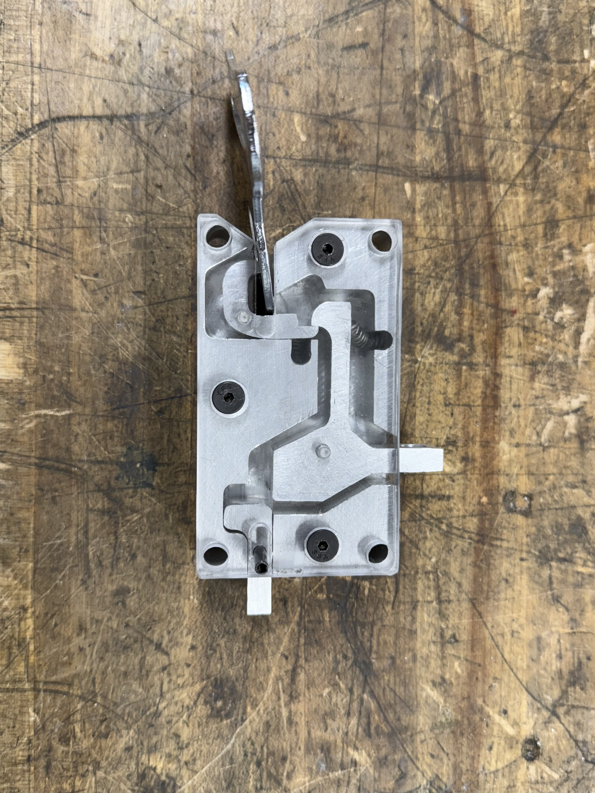

Surfboard Propulsion System
Overview:
Working with a team of four engineers, I helped develop a purely mechanical propulsion system designed to assist with one of the biggest challenges beginner surfers face: paddling.
Design:
Our system provides a quick burst of speed with the pull of a lever. It consists of 3 main subsystems:
- Paddle: Travels along the aluminum rail, attached to 2, high power springs. When release, it provides a large amount of thrust
- Winch: Allows for effortless energy storage of the paddle. Cranks the paddle into position
- Trigger: Holds the paddle in place with a crossbow-inspired mechanism.




Autonomous Targeting System
Video games are fun, but what's the real consequence of losing? Restarting a level? Losing your inventory? No matter what, the punishment stays inside the game. I wanted to change that by creating a system that brings the consequences into the real world. Inspired by Michael Reeves "The Robot That Shines a Laser in Your Eye," I designed and built a face-tracking turret that detects the player's face and fires a Nerf gun whenever they die in the notoriously difficult game Elden Ring. This was one of my first projects involving electronics, embedded systems, and computer vision, so it pushed me well outside my comfort zone and taught me a great deal about integrating hardware and software into a working system. Coded in Python, utilizing opencv and Optical Character Recognition Ran on an Arduino Uno Webcam Servo Motors After finishing the first version of the project in 2023, I decided to revisit the design and build a second iteration. Using Onshape for CAD and 3D printing custom components, I was able to solve many of the stability and assembly issues present in the original prototype. The first version was held together with hot glue and a lot of hope, so this redesign was a huge improvement in both reliability and overall build quality.
Dice Rolling Robot
Designed after the character ‘Bender’ from the show Futarama, this robot serves as an interactive alternative to traditional dice that reacts to a user’s dice roll and outputs a personalized audio file. This robot was developed as a birthday gift to my friend. I finished the project in 3 weeks. I modeled the robot in onshape, custom designing the parts. Materials: LCD Touchscreen Arduino Uno Servo Motors
Motor Coaster
There’s always that one guy in our lives that forgets to use a coaster. That guy might even be you! I created a coaster that uses computer vision to detect cups or bottles that are about to be placed, and moves into position underneath them. This way, you never forget to use a coaster. Opencv Raspberry Pi Pico Raspberry Pi Zero 2 W